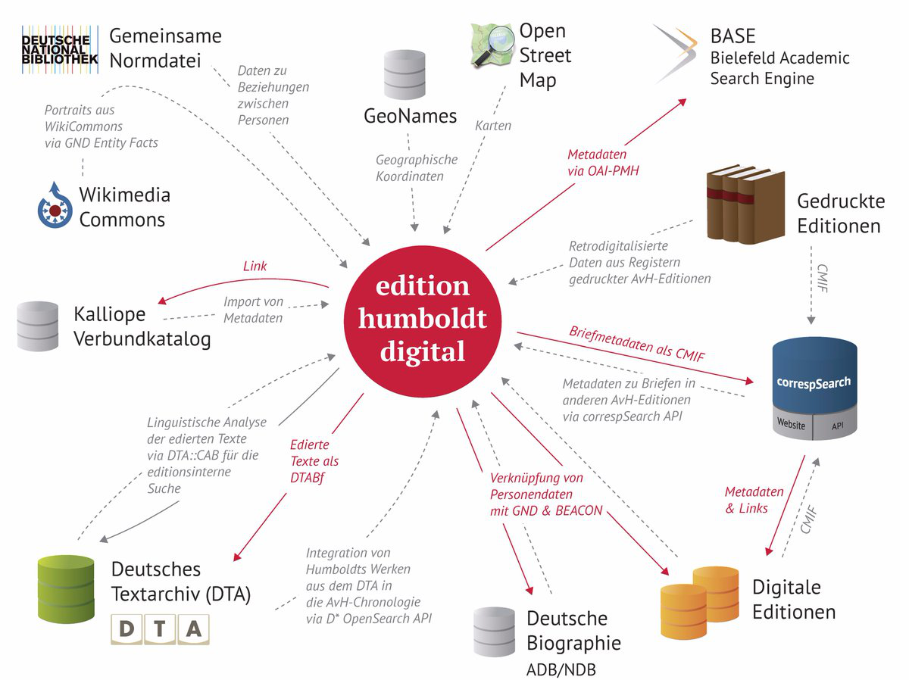
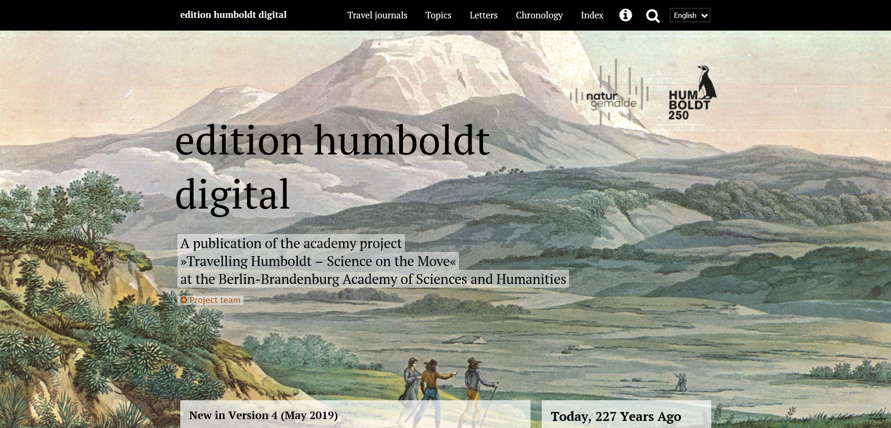
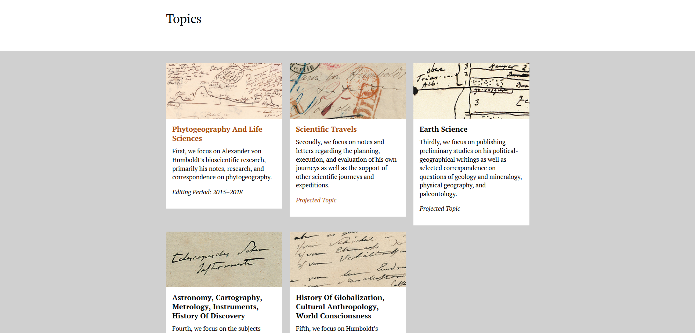
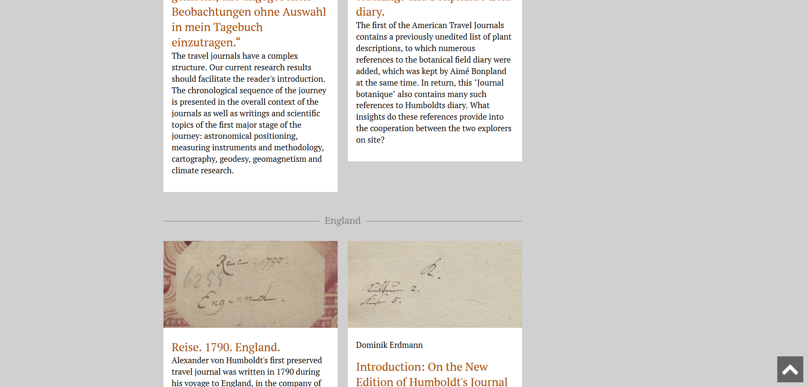
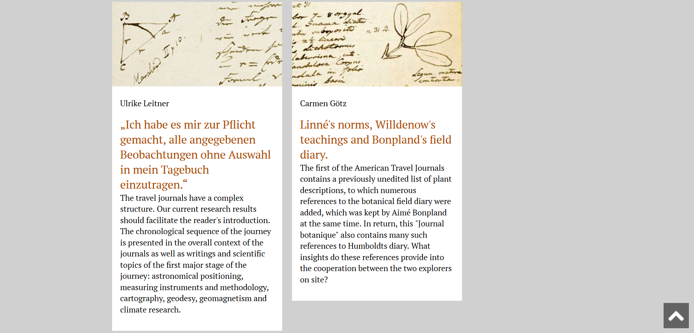
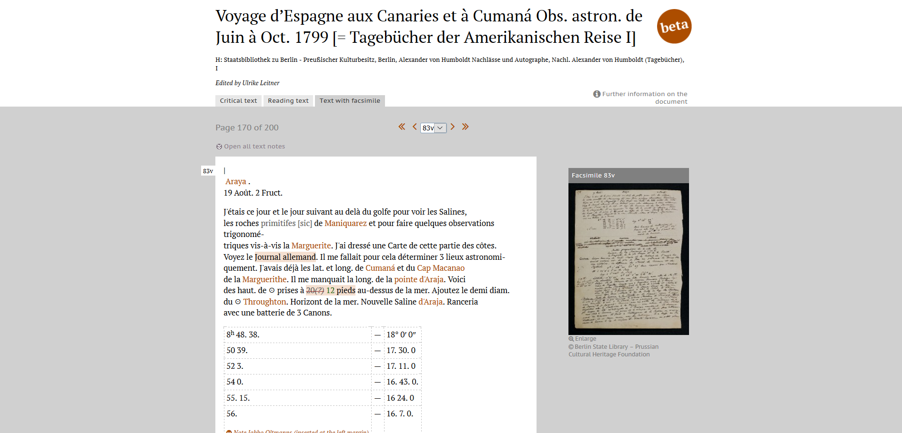
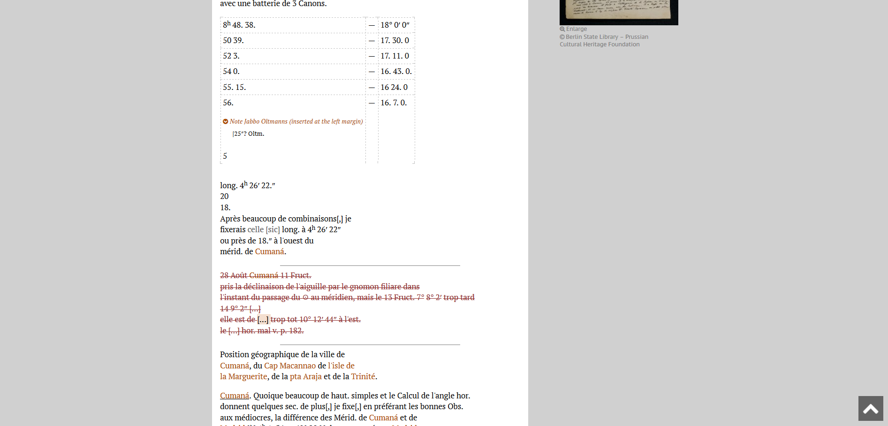
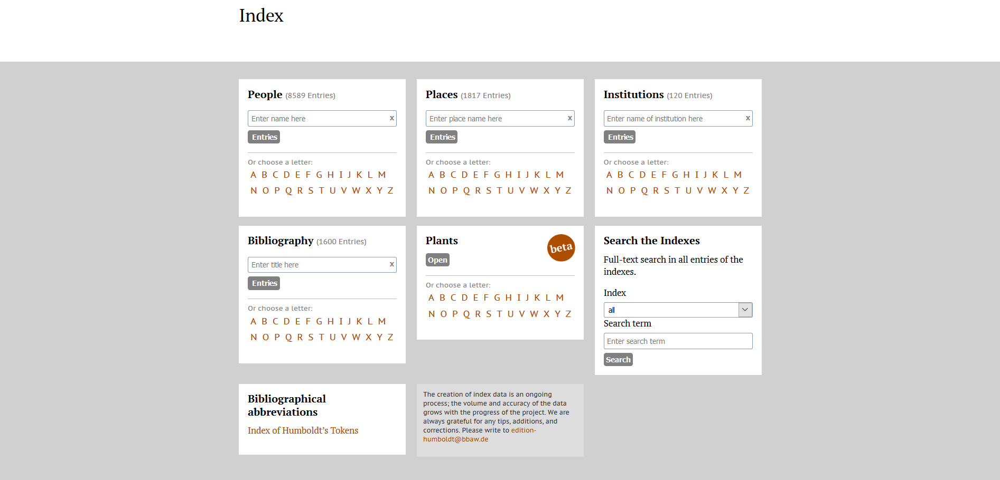
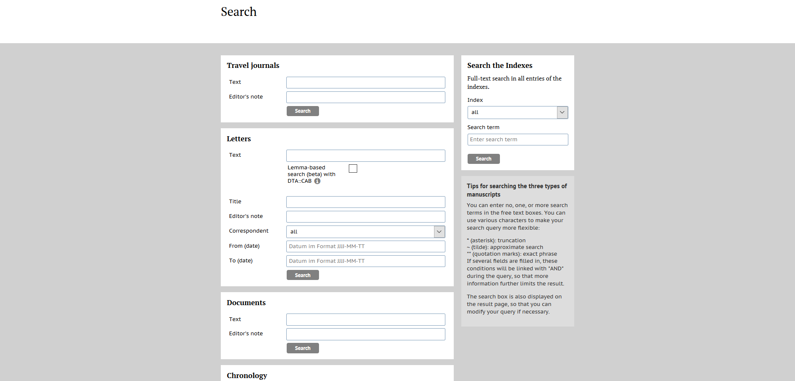

At the intersection of sciences, humanities and technologies – A review of the edition humboldt digital
Table of Contents
Abstract
The edition humboldt digital is a publication of the project ‘Travelling Humboldt’ by the Berlin-Brandenburg Academy of Sciences and Humanities. Together with its printed supplement the edition humboldt printed, it aims to make the scientific heritage that is relevant to Alexander von Humboldt’s journeys accessible in its entirety based on a digital first approach. Overall, the edition humboldt digital excels in exploiting digital techniques and successfully positions itself at the intersection of sciences and humanities. Therefore, it will be discussed in this review whether it could be considered not only as a scholarly digital edition but also as an information platform on Alexander von Humboldt and his work in general. Additionally, by pursuing an open science strategy, the edition also paves the way for future reuse of its data. Altogether, even though some technical issues remain, the edition humboldt digital can serve as a role model for other digital scholarly editions. As the edition is a work-in-progress project, this review only takes its fourth version into consideration.
Introduction
Alexander von Humboldt (1769–1859) is predominantly known as the celebrated German natural scientist credited with the creation of modern geography. However, characterizing him solely as a natural scientist neglects the diversity of Humboldt’s research interests. During his lifetime, he not only advanced fundamental research in today’s disciplines such as geography, geology, geophysics and biology, but also made essential contributions to the fields of national economics and ethnology. Throughout his life he undertook several expeditions to the then unexplored parts of the world, such as Latin America and Siberia, and returned with diverse and meticulously recorded data and travel journals. Because of this field research, Humboldt was not only held in high esteem by the contemporary scientific community, but also received public attention for making foreign countries and cultures tangible for a broader audience. Hence, from today’s perspective, Alexander von Humboldt is considered a cosmopolitan and transdisciplinary, educated scholar.
The complexity of Alexander von Humboldt’s work is quite remarkable but complicates its scientific reappraisal. Firstly, todays self-evident differentiation among scientific disciplines forms an institutional barrier to a holistic approach to Humboldt’s scientific heritage. Moreover, the vast extent of Humboldt’s written output and the complexity of his notes are further hurdles. Taking this into account, the Academy Project ‘Travelling Humboldt – Science on the Move’ at the Berlin-Brandenburg Academy of Sciences and Humanities is the first editorial project that attempts the enormous task of editing Humboldt’s scientific estate from a holistic and interdisciplinary perspective by investigating his manuscripts related to the topic of travel at the intersection of natural and cultural science.
Key points
Conceived as a long-term project with a duration of 18 years and funded by the federal state of Brandenburg and the German Federal Republic, ‘Travelling Humboldt’ can rely on a solid financial base and currently belongs to one of the bigger editorial projects in the German-speaking world. With Ottmar Ette, a Professor of Romance Languages and Comparative Literature, acting as the scholarly director and Tobias Kraft as the editorial director, the project is led by proficient Humboldt specialists, who have been involved in earlier Humboldt projects. They are supported by the mathematician and scientific historian Eberhard Knobloch, who is familiar with Humboldt’s work due to his previous position as the Director of the erstwhile Alexander von Humboldt research center and has proven experience in the field of editing scientific historical sources. All things considered, ‘Traveling Humboldt’ brings together a well-chosen team consisting of scholars from diverse research backgrounds such as history, philology, romance studies, mathematics and digital humanities, and thus fulfills its self-imposed interdisciplinary approach.1
Notwithstanding the project’s solid financial and scholarly resources, editorial focus still must be set. Thus, the project focusses on the thematic complex of travel which is considered an integral element of Humboldt’s work. The primary objective is to make those parts of Humboldt’s personal papers that are relevant to his travels accessible in their entirety in the form of the edition humboldt. In practice, this goal is achieved in three ways: The main focus of the project lies on the publication of Humboldt’s famous travel journals, primarily, those pertaining to his American and Russian-Siberian voyages, which have been purchased by the ‘Berlin State Library – Prussian Cultural Heritage’ in 2015. Secondly, the manuscripts are enhanced by a selection of personal papers that document his travels, such as memoirs, publications, map collections and notes. In this section, the sources come from the ‘Berlin State Library’ and the ‘Jagiellonian Library’ in Krakow and some of them have been previously edited. Considering this fact, the project draws partly on the contents of existing, printed scholarly editions but rearranges them by subtopics, such as ‘scientific travels’ or ‘earth science’. The project’s third thematic focus lies on the correspondence Humboldt maintained with other researchers. Just as Humboldt’s personal papers, the source materials originate from different memory institutions and often have already been edited. Hence, the edition includes unedited material as well as information from preceding and third-party edition projects. However, even though borrowed transcriptions or information are always declared as such, a systematic list of all utilized external resources is missing.2
Due to its choice in source material, ‘Travelling Humboldt’ not only has to handle the genuine complexity of Humboldt’s work, but also the diversity of the chosen material. The project attempts to tackle these challenges by using the possibilities that are offered through new Digital Humanities technologies. In other words, it uses a digital first approach for its edition.
Content and structure
In practice, using a digital first approach means that the edition humboldt is developed as a text corpus based on TEI-XML. But why do they call it a ‘digital first approach’ and not simply ‘digital approach’?3 This slight distinction is due to the project’s form of publication: despite its digital methodology, it pursues a hybrid way of publishing. Hence, the XML-based text corpus serves as a basis for both, the edition humboldt digital, which is made available to the public on a homepage, as well as the edition humboldt print, which is published as a multivolume printed work.
Although the project ‘Travelling Humboldt’ focuses on the topic of travel, neither the edition humboldt in general, nor the edition humboldt digital, or the edition humboldt print have any obvious nominal relation to that theme. Instead, the use of the adjectives ‘digital’ and ‘print’ suggests that the editions define themselves by their chosen medium (see also the chapter “Digital – print – hybrid?”).

Apart from edited text, the edition also provides additional materials such as a bibliography, research contributions and commentaries on the manuscripts. Furthermore, it contains a chronology of Humboldt’s most important biographical data based on an out-of-stock book, which was first published in the 1960s and reprinted in the 1980s by the Berlin-Brandenburg Academy of Sciences and Humanities.5 In the chronology, detected errors are corrected by the editors, because not only former researchers made some errors but also a genius like Alexander von Humboldt himself were not above the possibility of occasional confusions in his notes.6
The edition is completed with a presentation of high-resolution facsimiles (provided that the legal framework permits it). Thus, the edition humboldt digital enables its users to explore Humboldt’s work in three ways: source-, context-or content-based. Overall, leaving the limitations of print editions such as scale and layout behind, the edition serves as a multilayer information platform on Alexander von Humboldt and his research.
While the edition humboldt digital focuses on the detail, the edition humboldt print aims to serve the needs of a general audience by offering a compact reading version of Humboldt’s travel journals. Furthermore, it is designed to create an ‘ideal’ text by arranging omissions and erroneous leaps in chronology in order to recreate Humboldt’s original itineraries. However, beside this chronological function, the edition humboldt print only serves as a supplement to its digital counterpart.7
Since the edition humboldt print is not available yet, this review only focusses on the manifestation of its digital counterpart, the edition humboldt digital.8 However, as not only the digital but also the print edition is based on a digital paradigm, it is also worth having a look at the conceptual framework of the edition humboldt in general first, in order to discover its self-positioning within the field of digital scholarly editing.
Digital – print – hybrid?
There are several controversial issues about making a print edition based on a digital approach, whilst simultaneously publishing a digital edition. First, referring to Patrick Sahle, who states that a digital scholarly edition is characterized by its underlying digital paradigm, one might ask whether a print edition based on a digital paradigm is an antithesis in and of itself.9 This argument is supported by the fact, that a conversion of a digital edition into a print edition necessarily results in a loss of information, such as function or metadata. Finally, considering practical issues, it is questionable whether a reproduction of Humboldt’s itineraries (as planned for the printed edition) could not have been realized – or are already partly prepared (e.g. through the chronology and the usage of authority files for place names) – in a digital way as well.
Regarding this digital – print controversy, it must be pointed out that neither the decision to develop hybrid publishing, nor the design of the digital strategy or anything else within the project in general was done arbitrarily. In that respect, several strategic papers have been published since the launch of the project and accurately predefine and outline the editions mission and methods. In his article ‘Hybride Edition und analoges Erbe’ Tobias Kraft provides an extensive and thorough self-reflection on several controversial arguments for and against digital as well as print editions. Overall, Kraft – who is a media scholar– emphasizes several advantages supporting a print edition, such as better velocity and quality of reading capacity as well as digital preservation issues. However, the latter argument seems to be disputable. Due to the long-term duration and solid financing of the project, the edition humboldt is in a unique situation as it could keep up to technical innovations. In doing so, it could also make major contributions towards the research in the field of digital preservation of digital scholarly editions by assessing and evaluating its preservation strategy in the long run.
In any case, Kraft is also aware of the aforementioned dissent. Concerning technical matters, he argues that scholarly editions have reached a historical turning point where methodology, technology and media are still dynamic and future developments are not yet in sight. Therefore, he considers a hybrid approach to be the best strategy at the present time. However, this does not mean that the project’s hybrid approach is cast in stone until 2033, as he states:
A project which works on a hybrid edition of historical manuscripts in 2017, needs to remain open to the question, which requirements and expectations will be demanded of such an edition in three, five, ten or fifteen years.10
The edition humboldt digital
Editorial decisions
The edition humboldt digital provides an extensive and precise documentation. From editorial guidelines and technical key parameters to human resources – the user is informed about every detail; however small it might be.11 Therefore, the edition humboldt digital meets the transparency criteria as demanded of scholarly editions. Unfortunately, the documentation is only available in German, while most of the other parts of the edition are provided in English as well. Referring to this, consistency would be preferable regarding an international audience. However, as most of Humboldt’s work itself is written in German too, this issue seems to be negligible. Nevertheless, it is worth discussing the edition’s methodological principles in detail for an English-speaking audience at this point.12
The current guidelines of the edition humboldt digital are a beta-version and give a brief overview of encoding and transcription principles as well as data modelling and technical basics. In an introductory section it is outlined that the edition relies on a visual-, text- and content-based approach. Therefore, builds upon an integrative understanding of text. However, the descriptions do not stop there: The project provides a comprehensive comment not only on the different models themselves but also on the resulting practical editorial decisions.
Referring to Humboldt’s complex manner of taking notes, an integrative approach is probably the only way in order to handle his work. From data deriving from glaciological measurements and biodiversity studies, to ethnological and socio-historical documentations: The edited data not only is heterogeneous in its nature, but also has a complex structure. Moreover, the different disciplines have different requirements to data. For example, geographers might be satisfied with a reading text, as they only want to analyze Humboldt’s primary data. In contrast, philologists require annotated transcriptions for their research. By using an integrative approach, the edition can serve all these differing scholarly needs. In addition, the edition also achieves basic research itself by using a content-based concept of text. Due to its well-developed content-based indexing, information and entities as mentioned in Humboldt’s notes, are contextualized and brought together with external web services in order to facilitate access to the edition’s content for scholars from all backgrounds.
Based on this general methodological introduction, the documentation provides a separate section with further information on the individual treatment of metadata, text, letters and the index.13 In each section, the practical implementation of the different models is illustrated by using practical examples. On a technical level, the markup system relies on the ‘Basisformat des Deutschen Textarchivs (DTABf)’, which conforms to the TEI guidelines.14 Therefore, the edition’s data model complies with current standards in text markup and textual archiving. Due to some particularities of Humboldt’s notes, a project-related adaptation and enhancement of the tag set was necessary. For example, a specific tag set in order to describe Humboldt’s measurement data was developed. However, individual adaptations of the schema are well-documented and made transparent.
Examining the tagging and editorial guidelines as given in the documentation more closely, each editorial decision is explained in detail as follows: First, the ‘ediarum.BASE’ and their specific implementation in the edition humboldt digital are outlined and practical examples of application are used in order to illustrate issues as given in the source and specifically designed editorial solutions. Usually, an image of a text passage, its accompanying encoding as well as its final representation within the edition humboldt digital is provided. Secondly, the encoding is explained in detail and all the applied tag sets are listed. Finally, references are made to the documentation of the DTABf.15
Overall, the project’s documentation is a powerful resource that enables users to develop a deeper understanding of the edition. Thus, as already discussed above, an English translation of the documentation would be desirable.
Altogether, the edition humboldt digital illustrates its complex editorial and methodological decisions in a concise and comprehensive way. This aspect can be traced back to the fact that the entire documentation manages to go into detail without overwhelming the user with too many specific and technical terms. Therefore, the documentation is also easily accessible for disciplines who have little or no connection to digital scholarly editing and achieves to reach a wide group of users in order to allow an interdisciplinary re-examination of Humboldt’s work. Thus, the edition humboldt digital successfully positions itself at the intersection of science and humanities.
Publication and presentation
The edition humboldt digital was first published online in September 2016. Since then, several versions have been launched as a work in progress. In the following chapters, the fourth version of the edition as released on 27th May 2018 is reviewed.
The project is realized with the open access and digital work and publishing environment ‘ediarum’, as developed by the ‘TELOTA’16 initiative. The open source software ‘digilib’ is used for displaying facsimiles. Considering long-term preservation issues, this use of open access and open source tools is commendable.

By clicking on the desired menu item, a new layer opens, and the respective contents are also modularly presented by means of a grid structure. Each module comprises a title, a brief teaser text, and most often an image. However, the arrangement of the modules varies among the different sections of the digital edition.
For instance, the front page of the section Topics provides a kind of main menu, where the elaborated topics are selectable (see figure 3). By choosing one topic, another sub-layer with different subheadings appears.




However, from a user’s perspective there are still some practical obstacles to be tackled. Due to the aforementioned complexity of Humboldt’s notes, it is not only difficult to interpret passages, but also to locate them within the facsimile. In other words, a link between text and image would be a tremendous help. Here, the edition humboldt digital could exploit further technical options to its advantage.17

Index and search engine

First and foremost, indices of people, places and institutions are provided. They are accompanied by a bibliography which comprises contemporary works from the eighteenth century up to current secondary literature. Within the bibliography, each entry contains a link to a Zotero group called ‘AvH-R’. This group is open to the public and collects literature regarding Alexander von Humboldt on a collaborative basis. Like the indices, the bibliography is browsable too. However, its search function and the presentation of search results could still be further improved. As search results are stringed together and lacking proper spacing, it is difficult to differentiate singular entries. Referring to this, a more user-friendly presentation would be desirable.
Apart from traditional services, the edition humboldt digital also offers some exceptional features. Since Humboldt took notes following a specific system, some parts of his manuscripts are not self-explanatory. Therefore, the edition contains a complete breakdown of ‘Humboldt’s Tokens’ (German: “Siglen”), including individual shorthand symbols as well as textual abbreviations, which are essential in order to reappraise his work. Additionally, since the realization of Version 4, the edition also comprises a plant index which lists each plant mentioned in the edited sources and links it to digital databases such as the Catalogue of Life or the Biodiversity Heritage Library.18 Hence, this index is a powerful resource, particularly for those from a biological or ecological research background.

For instance, one can select different parts of the edition in order to browse them with one or more terms at the same time. Furthermore, one can carry out flexible queries and for the letter section even a lemma-based search is available. As previously stated, the advanced search engine is preferable to a general search function, despite its complexity. Therefore, it is acceptable that depending on the chosen term it occasionally can take quite some time to retrieve the requested information.
Future developments and re-usability
Finally, it is necessary to take a brief look at the edition’s own positioning within the scientific community. In the course of this review, it has been outlined that the philosophy of the edition humboldt digital can be determined by three core elements: open standards, transparency and the cross-linking of information. These goals are put to practice through an open science strategy. The aforementioned openness to future technical and methodological changes as well as the willingness to react to users’ needs by encouraging feedback further enhance the project’s open mindset. Finally, not only the edition’s implementation of open standards but also its willingness to share data is to emphasize.
As already mentioned, on the one hand the edition implements secondary information from external services. On the other, it also makes its data and information available to others: For each edited document, the respective TEI-XML file is provided as a free download under an “Attribution-ShareAlike 4.0 International”- Creative Commons license. Therefore, the edition’s data is almost unlimitedly available for further research, for which suggested citations and canonical references are provided too. Even if there is currently no possibility to download the complete data set, a harvesting function is provided through several APIs. For all APIs, detailed descriptions and the necessary links are listed in the documentary section. Consequently, the conditions of data reuse as well as the download possibilities are designed in a user-friendly way.
As parts of the edition might also be interesting for people who are yet unaware of its existence, the edition also collects its correspondence datasets in the web service ‘correspSearch’. Thus, the edition humboldt digital follows a sustainable data management strategy from a scientific and technical perspective.
Overall, the project fulfills its aim to make Humboldt’s work accessible. Moreover, it not only reaches the scientific community but also inspires a broader, non-scientific audience to engage with Alexander von Humboldt’s scientific heritage by running further outreach activities. As an additional service, the edition runs a Twitter account called ‘Alex von Humboldt’ and regularly posts entries from the chronology section.19 As 2019 marks the 250th anniversary of Humboldt’s birth, several projects are using the hashtag #AvH250 in order to draw attention to their scholarly activities. The edition humboldt is participating in the anniversary celebrations and therefore links the hashtag, as well as other Humboldt projects of the Berlin-Brandenburg Academy of Sciences and Humanities, to its start page. Thus, it also promotes the presence of partner projects online and therefore pursues a kind of scientific public relations work. Altogether, this effort already bears fruit as evidenced by the huge number of articles about the edition humboldt which have been published in the daily newspapers since its launch. Additionally, the fact the edition humboldt digital was awarded with the first Berlin DH price in 2017 further contributed towards its public and media attention.20
Conclusion
Despite the complexity of Humboldt’s scientific heritage, it has been made clear in this review that the edition humboldt digital is doing a brilliant job so far. Particularly its exceptional documentation, its user-friendly attitude and the implementation of established technical standards need to be emphasized once again. Referring to this, the edition can serve as a role model for further digital scholarly editions. Due to its long-term duration, it tends to be likely that the project might eventually shape further methodological developments in the field of digital scholarly editions and set new standards in the years ahead. In this respect, the development and presentation of a convincing concept for the long term preservation and accessibility of the digital edition could make a valuable contribution towards the research on digital scholarly editions in general.
Concerning issues of digital preservation, one might question whether a reconstruction of Humboldt’s original itineraries necessarily requires a print medium or could also be done in a digital way. Even though Tobias Kraft provides plausible arguments against a digital edition based on reading comprehension and long-term preservation, he does not give any justification for the benefit of an analogue reconstruction of the itineraries at any point. However, as the printed edition is not published yet, its advantages and disadvantages cannot be reviewed at this point. Notwithstanding this, it is already now debatable, whether itineraries that integrate spatial and temporal information can be better presented in the rather ‘static’ print medium than in the digital medium that can render such information in a dynamic and contextualizing manner. Especially the spatial dimension of Humboldt’s manuscripts could be reconstructed in a digital way. For instance, a visualization of Humboldt’s travel route in the form of a map would be an enrichment for the edition. Moreover, such an application would not only be consistent with the topic of travelling but also suits the project’s philosophy of making use of the various possibilities of digital technology.
When comparing the edition’s objectives and guidelines with its current condition, it can be concluded that it lives up to its promises. It performs superbly in its self-positioning at the intersection of science and humanities, while also enabling low-threshold access to Humboldt’s work by offering extensive annotations and cross-linking to further material. One might even consider the edition humboldt digital an information platform rather than ‘just’ a scholarly edition, as it not only includes edited primary data but also a plethora of secondary material referring to Alexander von Humboldt and his work in general. Consequently, it can also serve other questions of research besides the topic of travelling.
Perhaps, the edition humboldt digital could also pool scholarly resources by providing a platform for future editions of Humboldt’s work. The quite general naming of the edition itself might eventually lend itself to future re-interpretations or shifts in focus.
Finally, it can be concluded that even though some – mainly technical – deficiencies have been identified in this review one can be excited about future versions of the edition humboldt digital. As the edition is still in its early stage, further modifications and innovations by 2033 are very likely. Indeed, the remarkable feature of the plant index, as released in version four, is a promising indicator for that and gives rise to high expectations.
Bibliography
- Humboldt, Alexander von. 1983. ‘Chronologische Übersicht über wichtige Daten seines Lebens‘. Bearbeitet von Kurt-R. Biermann, Ilse Jahn und Fritz G. Lange unter Mitwirkung von Margot Faak und Peter Honigmann in zwei Bänden.
- Kraft, Tobias. 2017. ‘Die Berliner Edition Humboldt digital’. In Hin – International Review for Humboldt Studies 34: 3-16. http://web.archive.org/web/20190604155213/http://www.hin-online.de/index.php/hin/article/view/256/462.
- Kraft, Tobias. 2018a. ‘Hybride Edition und analoges Erbe. Editionsphilologie und Alexander von Humboldt-Forschung in der digitalen Sattelzeit’. In Informatik-Spektrum 12: 385-397.
- Kraft, Tobias. 2018b. ‘Die Berliner Edition Humboldt digital’. In Alexander von Humboldt, Handbuch: Leben – Werk – Wirkung, edited by Ottmar Ette, 276-284. Stuttgart: J.B. Metzler.
- Mertgens, Andreas. 2019. ‘Ediarum. A toolbox for editors and developers’. In RIDE 11. http://web.archive.org/web/20200915110631/https://ride.i-d-e.de/issues/issue-11/ediarum/.
- Plewe, Ernst. 1974. ‘Humboldt, Alexander von’, In Neue Deutsche Biographie 10: 33-43. http://web.archive.org/web/20190604155447/https://www.deutsche-biographie.de/pnd118554700.html.
- Sahle, Patrick. 2013. ‘Digitale Editionsformen, Zum Umgang mit der Überlieferung unter den Bedienungen des Medienwandels: Befunde, Theorie und Methodik’. In Schriften des Instituts für Dokumentologie und Editorik 8, Norderstedt: Books of Demand GmbH.
- Sahle, Patrick. 2017. ‘What is a Scholarly Digital Edition?‘. In Digital Scholarly Editing, Theories and Practices, edited by Matthew James Driscoll and Elena Pierazzo, 19-39. Cambridge: Open Book Publishers. http://web.archive.org/web/20190604155647/https://books.openedition.org/obp/3397?lang=de.
- Schnee, Florian. 2019. ‘Unveröffentlichte Schriften aus Humboldts Nachlass in der „edition humboldt print“‘. In Alexander von Humboldt Informationen digital. http://web.archive.org/web/20200118221524/https://www.avhumboldt.de/?p=15740.
Notes
- https://web.archive.org/web/20190604152900/https://edition-humboldt.de/about/index.xql?id=H0002928&l=en. ↑
- https://web.archive.org/web/20200815164557/https://www.bbaw.de/forschung/alexander-von-humboldt-auf-reisen-wissenschaft-aus-der-bewegung. ↑
- cf. Kraft 2018a 387. ↑
- cf. Kraft 2018a 396. ↑
- cf. Humboldt, Alexander von. ↑
- https://web.archive.org/web/20190604152954/https://edition-humboldt.de/about/index.xql?id=H0000002&l=en. ↑
- cf. Kraft 2018a 387. ↑
- Meanwhile, since the date of the submission of this review, the first volume of the print edition has been published. A detailed description of the contents of all volumes can be accessed on ‘Alexander von Humboldt Informationen online’. ↑
- cf. Sahle 2017. ↑
- cf. Kraft 2018a 386. ↑
- http://web.archive.org/web/20190604153215/https://edition-humboldt.de/about/index.xql?id=H0016212&l=en. ↑
- http://web.archive.org/web/20190604153115/edition-humboldt.de/richtlinien/index.html. ↑
- http://web.archive.org/web/20190604153115/edition-humboldt.de/richtlinien/index.html. ↑
- http://web.archive.org/web/20190604153326/http://deutschestextarchiv.de/doku/basisformat/. ↑
- Some examples of application in the documentation also contain practical advices on how to apply the encoding itself. Therefore, one might conclude that the documentation is also designed as internal guideline for the project’s staff. ↑
- For further information on ediarum see the project’s homepage and a review as recently published in RIDE: https://web.archive.org/web/20190604153420/http://www.bbaw.de/telota; cf. Mertgens. 2019. ↑
- For example, when viewing the first American Travel Journal f. 96r. ↑
- https://web.archive.org/web/20190605184115/https://www.biodiversitylibrary.org/; http://web.archive.org/web/20190529190620/http://www.catalogueoflife.org/. ↑
- The Twitter account @AvHChrono is accessible here: http://web.archive.org/web/20190604160728/https://twitter.com/AvHChrono?lang=de. ↑
- http://web.archive.org/web/20190830202045/https://edition-humboldt.de/about/index.xql?id=H0016214&l=de. ↑
@article{ehd,
author = {Benauer, Maria},
title = {At the intersection of sciences, humanities and technologies – A review of
the edition humboldt digital},
journal = {RIDE – A review journal for digital editions and resources},
number = {13},
year = {2020},
doi = {10.18716/ride.a.13.4},
url = {https://doi.org/10.18716/ride.a.13.4},
}TY - JOUR
AU - Benauer, Maria
TI - At the intersection of sciences, humanities and technologies – A review of
the edition humboldt digital
T2 - RIDE – A review journal for digital editions and resources
IS - 13
PY - 2020
DA - 2020/12
DO - 10.18716/ride.a.13.4
UR - https://doi.org/10.18716/ride.a.13.4
PB - Institut für Dokumentologie und Editorik e.V.
LA - en
ER - Benauer, M. (2020). At the intersection of sciences, humanities and technologies – A review of
the edition humboldt digital. RIDE – A review journal for digital editions and resources, (13). https://doi.org/10.18716/ride.a.13.4Benauer, Maria. "At the intersection of sciences, humanities and technologies – A review of
the edition humboldt digital." RIDE – A review journal for digital editions and resources, no. 13, 2020. https://doi.org/10.18716/ride.a.13.4.Benauer, Maria. "At the intersection of sciences, humanities and technologies – A review of
the edition humboldt digital." RIDE – A review journal for digital editions and resources, no. 13 (2020). https://doi.org/10.18716/ride.a.13.4.